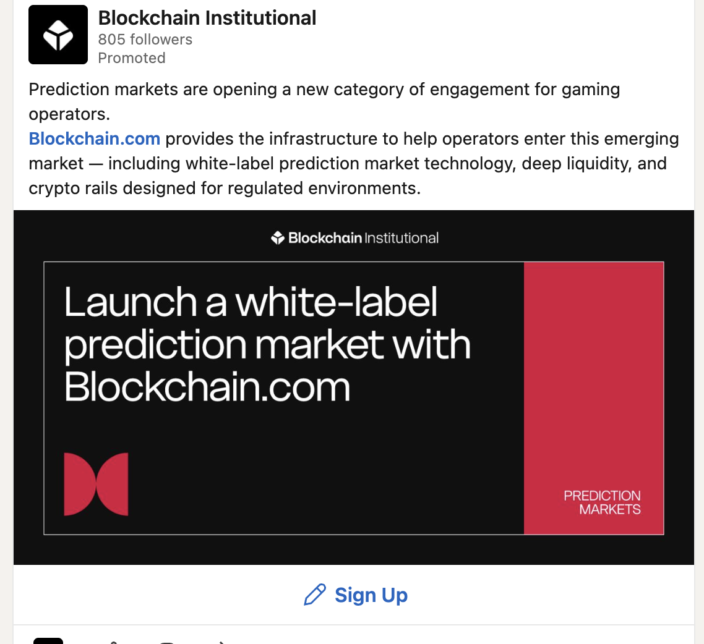
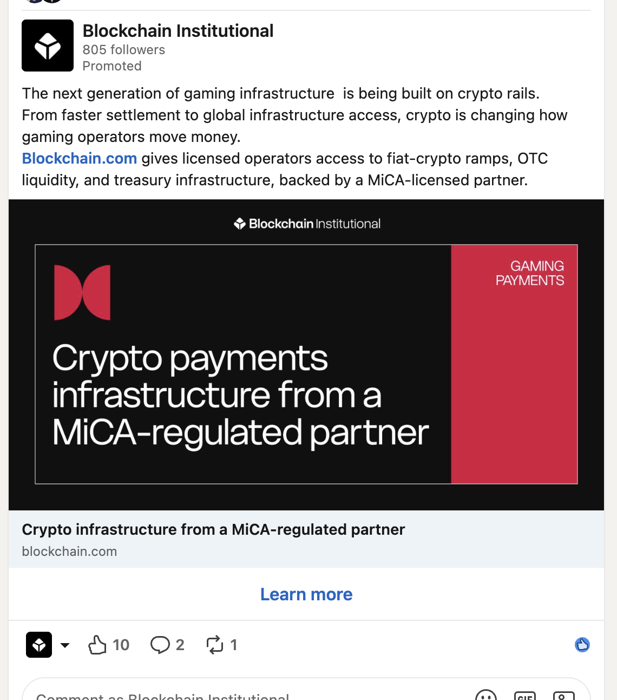
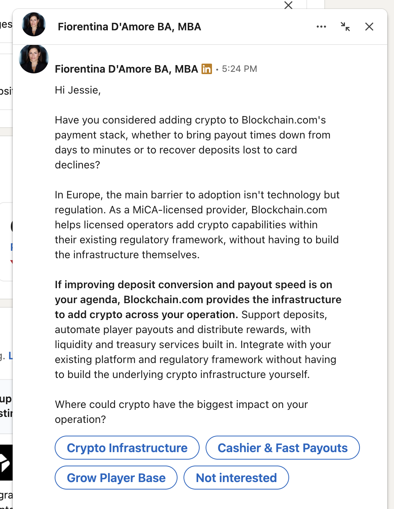
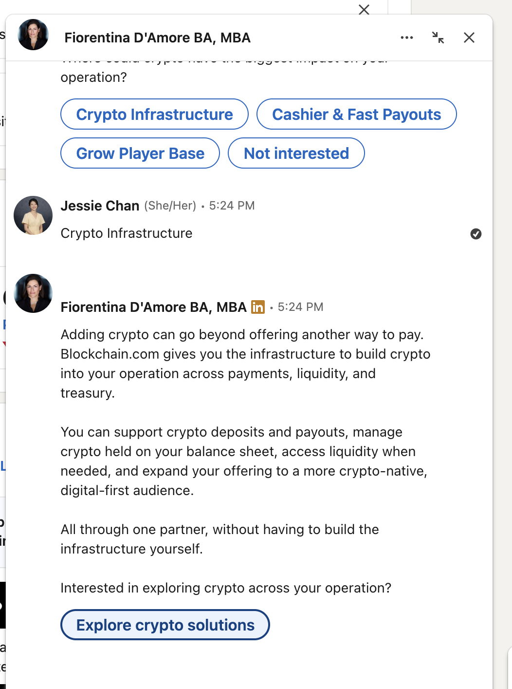
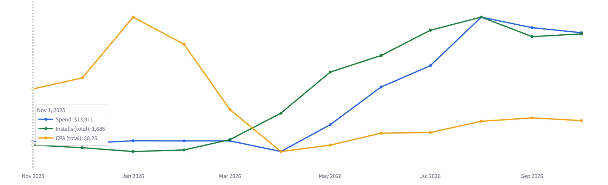
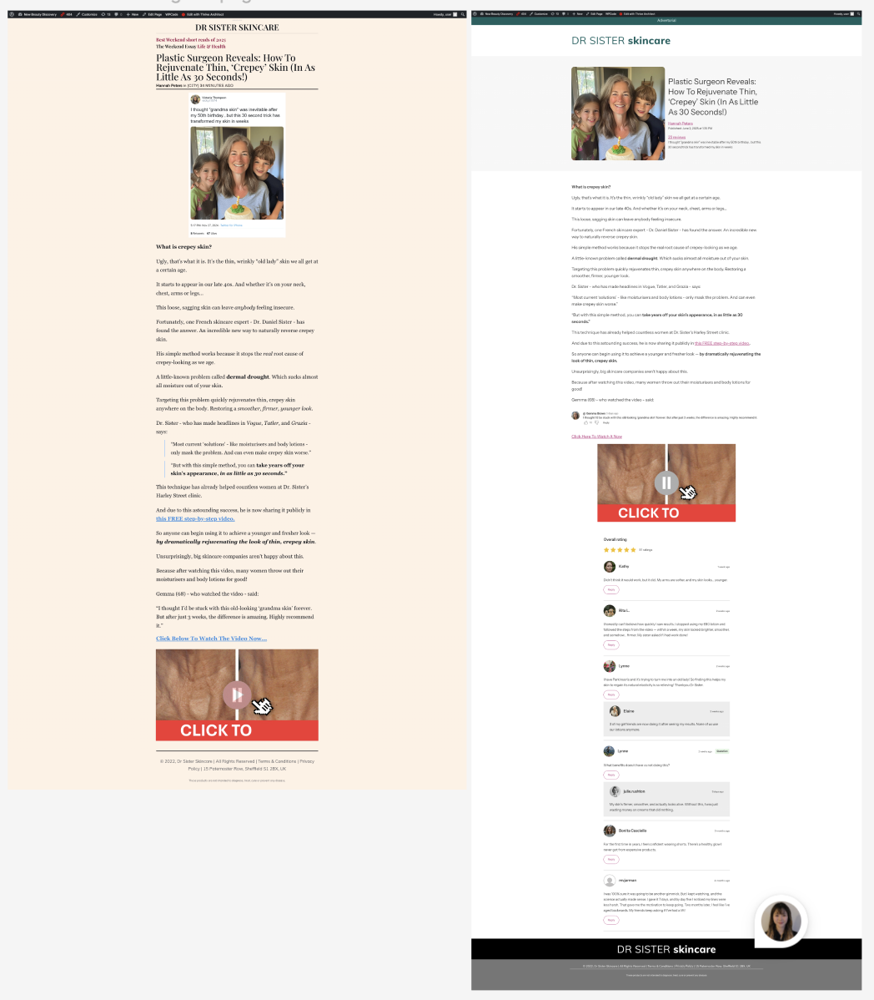

Portfolio for Noah · Digital Marketing · chan.jicheng@gmail.com · linkedin.com/in/ji-cheng-chan
Some figures and dashboards are company data that I do not feel comfortable disclosing, so this portfolio uses public ads, snapshots and aggregated data to show the impact of my work. I am happy to talk through any of it in more detail.
Consumer (most of my work). My consumer work is mainly paid media and running marketing campaigns. I also work closely with the Product team to improve the customer experience, and adapt our marketing language to sell our products.
Institutional (hands-on). On the institutional side, I led marketing for our expansion into iGaming. I built the outreach list for our business development team and ran LinkedIn lead generation ads, which brought in 20+ targeted, active leads at an average cost of about $120 per lead. Soon after, we hosted a dinner in Malta for 16 C-suite executives from the companies we had reached out to. I also support our institutional branding, for example our event around Solana Breakpoint in London, which aimed to build awareness of Blockchain.com's institutional business among the builder community.
Three days before my manager went on leave, he handed me the LAPTOP project. We had signed an institutional partnership with the LAPTOP team that included $600,000 worth of tokens to distribute through marketing campaigns, and all I had was a proposal of the plan. The first campaign went live the day after he left. Prize hunters in Nigeria spotted the quest, swarmed to claim the rewards and sold them on the exchange straight away, which increased selling pressure on the token, so we could not stick to the original wave 2 plan of targeting Nigeria and the EU.
I proposed a plan B to our CMO, targeting the EU and the US instead, since the EU was slower and could run on its own. The project is politically charged, so to address his concern about the US, I proposed running it only for acquisition in blue states, so it would not affect our current users. I agreed with Trading and Product to reduce the volume of wave 2 to limit selling pressure, negotiated a new start date and volume with the LAPTOP team, sent them a status report, and took the final regions through Legal for compliance checks. The project is still in progress, but within days I had taken full ownership of it.
Our ads relied on real creators, who were expensive and ran out fast, so I built our own AI UGC workflow and handed it to the team to run at scale. It now runs across every paid platform, including programmatic, and cut our paid social cost per install from $25 to $6.
When our Institutional team expanded into iGaming, I owned the marketing, building the outreach list and running LinkedIn lead generation ads to decision makers. The ads brought in 20+ targeted, active leads at about $120 per lead, and soon after we hosted a dinner in Malta for 16 C-suite executives from the companies we had reached out to.




Since I took over in May 2026, I expanded into new markets with a Custom Product Page for each one and tested different bidding methods as we went. What made it work was matching each page to what people searched for in that market, and cutting what did not perform. I knew it worked because spend and installs grew steeply while cost per install rose only modestly. Everything from May 2026 onwards is my work.

When we rebranded our yield product, every creator video still carried the old name. I recreated the creative with our AI UGC workflow and launched it across paid social. What made it work was speed, because we had fresh creative live from day one instead of waiting weeks for creators. I knew it worked because it drove 600+ installs in the first 7 days.
Relaunch creative: X ad 1 · X ad 2
I noticed our product performed best on BBC Good Food, so I designed a prelander inspired by that site's clean, trusted look, giving users a familiar experience from the ad to our page. It lifted landing page click-through rate by 20% and average order value by 16%. I then applied the same approach to a later stage of the funnel, which lifted conversion rate by 25% and average order value by a further 10%.

[App Store listing remake and copy changes, to be added]